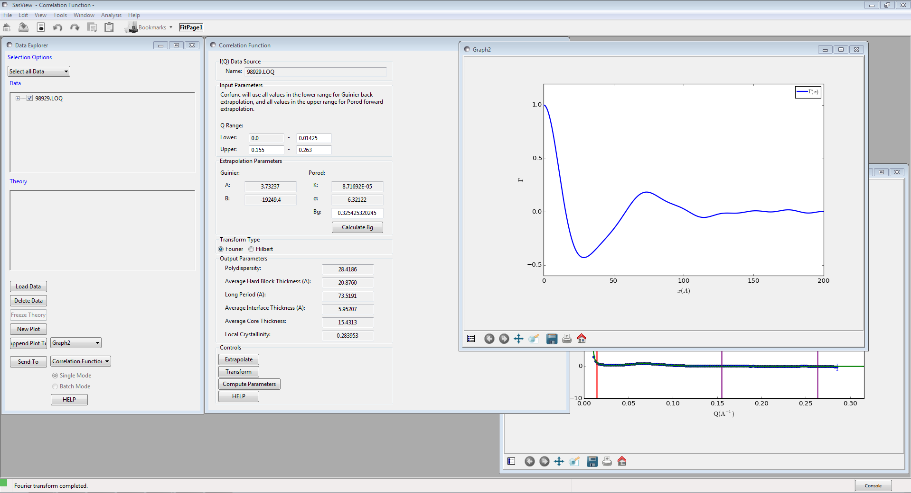

Correlation Function Analysis
Description
This performs a correlation function analysis of one-dimensional SAXS/SANS data, or generates a model-independent volume fraction profile from the SANS from an adsorbed polymer/surfactant layer.
A correlation function may be interpreted in terms of an imaginary rod moving through the structure of the material. Γ1D(R) is the probability that a rod of length R moving through the material has equal electron/neutron scattering length density at either end. Hence a frequently occurring spacing within a structure manifests itself as a peak.
A volume fraction profile \(\Phi\)(z) describes how the density of polymer segments/surfactant molecules varies with distance from an (assumed locally flat) interface.
Both functions are returned in real space.
The analysis is performed in 3 stages:
- Extrapolation of the scattering curve to \(Q = 0\) and \(Q = \infty\)
- Smoothed merging of the two extrapolations into the original data
- Fourier / Hilbert Transform of the smoothed data to give the correlation function / volume fraction profile, respectively
- (Optional) Interpretation of the 1D correlation function based on an ideal lamellar morphology
Extrapolation
To \(Q = 0\)
The data are extrapolated to Q = 0 by fitting a Guinier model to the data points in the low-Q range.
The equation used is:
The Guinier model assumes that the small angle scattering arises from particles and that parameter \(B\) is related to the radius of gyration of those particles. This has dubious applicability to polymer systems. However, the correlation function is affected by the Guinier back-extrapolation to the greatest extent at large values of R and so only has a small effect on the final analysis.
To \(Q = \infty\)
The data are extrapolated to Q = \(\infty\) by fitting a Porod model to the data points in the high-Q range.
The equation used is:
Where \(Bg\) is the background, \(K\) is the Porod constant, and \(\sigma\) (which must be > 0) describes the width of the electron or neutron scattering length density profile at the interface between the crystalline and amorphous regions as shown below.
Smoothing
The extrapolated data set consists of the Guinier back-extrapolation from Q~0 up to the lowest Q value in the original data, then the original scattering data, and the Porod tail-fit beyond this. The joins between the original data and the Guinier/Porod fits are smoothed using the algorithm below to avoid the formation of ripples in the transformed data.
Functions \(f(x_i)\) and \(g(x_i)\) where \(x_i \in \left\{ {x_1, x_2, ..., x_n} \right\}\), are smoothed over the range \([a, b]\) to produce \(y(x_i)\), by the following equations:
where:
Transform
Fourier
If “Fourier” is selected for the transform type, the analysis will perform a discrete cosine transform on the extrapolated data in order to calculate the correlation function
where Q* is the Scattering Invariant.
The following algorithm is applied:
Hilbert
If “Hilbert” is selected for the transform type, the analysis will perform a Hilbert transform on the extrapolated data in order to calculate the Volume Fraction Profile.
Note
This functionality is not yet implemented in SasView.
Interpretation
Correlation Function
Once the correlation function has been calculated it may be interpreted by clicking the “Compute Parameters” button.
The correlation function is interpreted in terms of an ideal lamellar morphology, and structural parameters are obtained from it as shown below. It should be noted that a small beam size is assumed; ie, no de-smearing is performed.
The structural parameters obtained are:
- Long Period \(= L_p\)
- Average Hard Block Thickness \(= L_c\)
- Average Core Thickness \(= D_0\)
- Average Interface Thickness \(\text{} = D_{tr}\)
- Polydispersity \(= \Gamma_{\text{min}}/\Gamma_{\text{max}}\)
- Local Crystallinity \(= L_c/L_p\)
Volume Fraction Profile
SasView does not provide any automatic interpretation of volume fraction profiles in the same way that it does for correlation functions. However, a number of structural parameters are obtainable by other means:
- Surface Coverage \(=\theta\)
- Anchor Separation \(= D\)
- Bound Fraction \(= <p>\)
- Second Moment \(= \sigma\)
- Maximum Extent \(= \delta_{\text{h}}\)
- Adsorbed Amount \(= \Gamma\)
References
Strobl, G. R.; Schneider, M. J. Polym. Sci. (1980), 18, 1343-1359
Koberstein, J.; Stein R. J. Polym. Sci. Phys. Ed. (1983), 21, 2181-2200
Baltá Calleja, F. J.; Vonk, C. G. X-ray Scattering of Synthetic Poylmers, Elsevier. Amsterdam (1989), 247-251
Baltá Calleja, F. J.; Vonk, C. G. X-ray Scattering of Synthetic Poylmers, Elsevier. Amsterdam (1989), 257-261
Baltá Calleja, F. J.; Vonk, C. G. X-ray Scattering of Synthetic Poylmers, Elsevier. Amsterdam (1989), 260-270
Fibre Diffraction Review References (PDF format)
Usage
Upon sending data for correlation function analysis, it will be plotted (minus the background value), along with a red bar indicating the upper end of the low-Q range (used for back-extrapolation), and 2 purple bars indicating the range to be used for forward-extrapolation. These bars may be moved my clicking and dragging, or by entering appropriate values in the Q range input boxes.
Once the Q ranges have been set, click the “Calculate” button to determine the background level. Alternatively, enter your own value into the field. If the box turns yellow this indicates that background subtraction has resulted in some negative intensities.
Click the “Extrapolate” button to extrapolate the data and plot the extrapolation in the same figure. The values of the parameters used for the Guinier and Porod models will also be shown in the “Extrapolation Parameters” section of the window.
Now select which type of transform you would like to perform, using the radio buttons:
- Fourier Perform a Fourier Transform to calculate the correlation function
- Hilbert Perform a Hilbert Transform to calculate the volume fraction profile
Click the “Transform” button to perform the selected transform and plot the result in a new graph window.
If a Fourier Transform was performed, the “Compute Parameters” button can now be clicked to interpret the correlation function as described earlier.

Note
This help document was last changed by Steve King, 08Oct2016